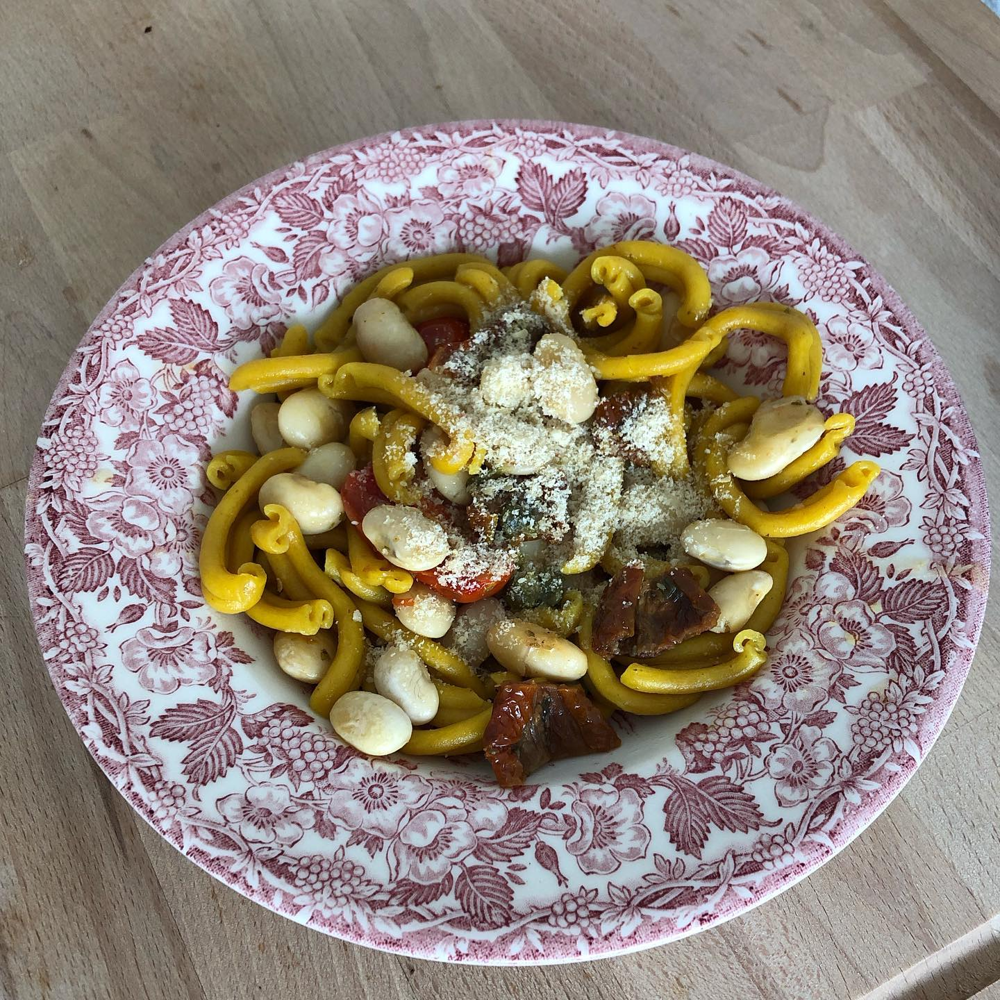

Kapary podľa @jesierant — Normy Jedál
Einfach und Lecker 🌱
Frische Pasta (aus @freaberlin) / Weiße Bohnen / Tomaten Und Sonnengetrocknete Tomaten / Kapern/ Hausgemachter Veganer Parmesan Käse
#homecooking #vegancooking #veganberlin #frea #plantbased #plantbasedberlin #plantbasedfood #zerowaste #veganesessen #weganskiejedzenie #roslinnejedzenie #fasola #strączki #semolina #domowymakaron #płatkidrożdżowe #roślinniejemy #suszonepomidory #kapary #makaron #pasta #nuddeln #frischepasta #weißebohnen #veganerkäse #tomaten #kapern #lockdown #lockdowncooking #zerowastelunch